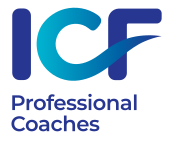

About Valérie

 Valérie Del-Sol is an ICF (International Coaching Federation) certified
Executive and Life Coach, and a HOGAN Assessment Test certified Coach. She
attended the Core Essentials and the Advanced Corporate Coaching programs at
Coach University, from 1994 to 1996. She is experienced in both corporate and
non-profit sectors.
Valérie Del-Sol is an ICF (International Coaching Federation) certified
Executive and Life Coach, and a HOGAN Assessment Test certified Coach. She
attended the Core Essentials and the Advanced Corporate Coaching programs at
Coach University, from 1994 to 1996. She is experienced in both corporate and
non-profit sectors.
In the past two decades, Valérie's Clients have included high to mid-level management executives at Hachette-Filipacchi Media, Goldman Sachs, Sony Music, Hearst Publishing, Condé Nast, Friends of The High Line, WSL Strategies, AXA-The Equitable Life Insurance, American Express, Missoni, American Media Inc., Corcoran Real Estate, Colgate-Palmolive, First Republic Bank, Roche-Bobois, Head&Hand PR, to name a few, plus many entrepreneurs and individuals from all backgrounds.
The scope of Valérie's coaching is broad in nature yet tailored to each Client. When relating to companies and organizations, her main focus includes leadership, culture and branding, communication and management skills. She brings a holistic approach to her Clients' interactions. She coaches organizations on creating high functioning, cross-cultural environments where people thrive for professional and personal growth and excellence.
In coaching a sole Client, she creates a supportive space to allow reaching for the highest potential while finding life balance. She partners with Clients and Teams to explore new and broader perspectives, to raise awareness and design attainable objectives. She manages progress and accountability throughout while holding her Client's vision.
Prior to being fully immersed in coaching, Valérie chaired the French Department at the New School University in New York and helped international companies bridge the cultural gap through language instruction and approach to diversity.
She holds two Bachelors of Art from the Sorbonne in Paris, France: one in Art History, one in History. She attended the Sorbonne's Masters Program in History. She is trilingual, fluent in English, French, Italian and has good knowledge of German.
 Valérie is a Master Certified Coach and an active member of the ICF New York
Chapter and ICF Synergie. As such, she has pledged to comply with ICF
Standards of Ethical Conduct, especially confidentiality. She continuously
furthers her education and updates her credentials to meet an ever-changing
world. She is involved in meditation and practices mindfulness. She is a
student of Ayurveda, the oldest medicine system in the world. She currently
resides on Martha’s Vineyard, Massachusetts and is the principal in her
global practice.
Valérie is a Master Certified Coach and an active member of the ICF New York
Chapter and ICF Synergie. As such, she has pledged to comply with ICF
Standards of Ethical Conduct, especially confidentiality. She continuously
furthers her education and updates her credentials to meet an ever-changing
world. She is involved in meditation and practices mindfulness. She is a
student of Ayurveda, the oldest medicine system in the world. She currently
resides on Martha’s Vineyard, Massachusetts and is the principal in her
global practice.